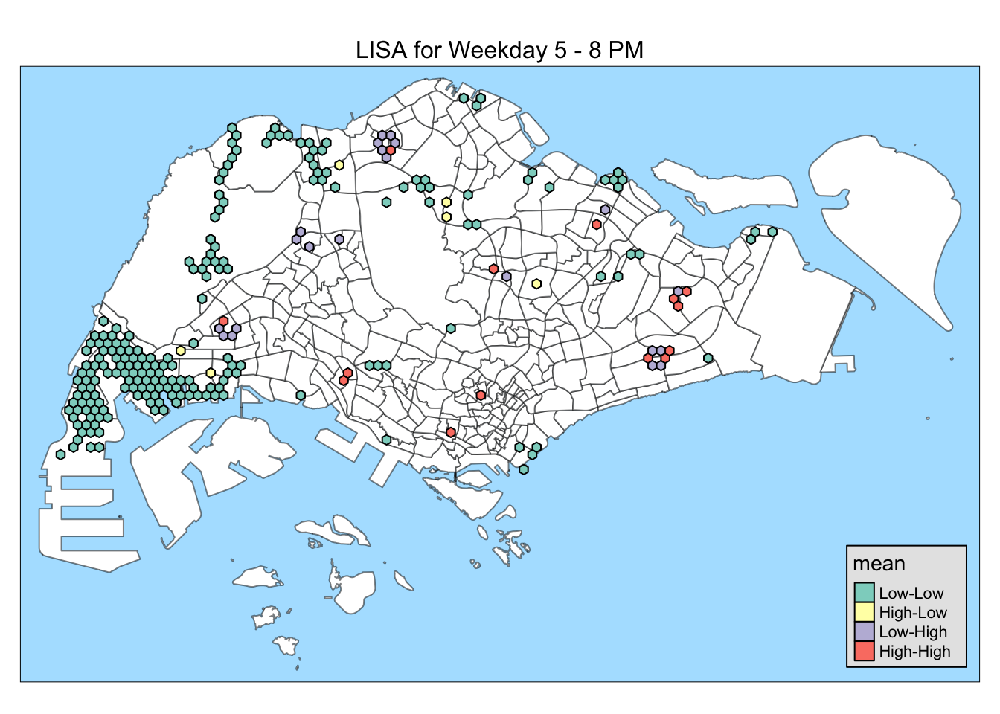

pacman::p_load(sf, sfdep, tmap, tidyverse, knitr)Take Home Exercise 1C: Spatial Analysis with LISA
Overview
The aim of this study is to uncover spatial and spatio-temporal mobility patterns of public bus passengers in Singapore.
The main modes of analysis to be used here are Local Indicators of Spatial Association (GLISA) and Emerging Hot Spot Analysis (EHSA).
In doing these study, we will be looking at bus trips started during the hours below.
| Peak hour period | Bus tap on time |
|---|---|
| Weekday morning peak | 6am to 9am |
| Weekday evening peak | 5pm to 8pm |
| Weekend/holiday morning peak | 11am to 2pm |
| Weekend/holiday evening peak | 4pm to 7pm |
More details about the study can be found here.
In this part of the study, we will do spatial analysis with LISA using bus commuter traffic data generated from Data Wrangling. We will also attempt the answer the Open Questions from Geovisualization and Analysis:
Which areas are busier on weekends? on weekdays?
What are the commuting patterns of people during weekdays? weekends?
Setup
Setting Up the R Environment
We will load the following R packages needed for this study.
tmap: for thematic mapping
sf: for geospatial data handling
tidyverse: for non-spatial data handling
sfdep: for spatial analysis
knitr:for prettifying presentation
Environment settings
We will also set the default settings on for this document
tmap_styleto natural: for displaying the maps with preferred styleset seed for reproducibility of results
tmap_mode("plot")
tmap_style("natural")
set.seed(1234)Loading the data
Important
Before running this part, please run all the code chunks in Data Wrangling as it generates the data needed for this document.
Use read_rds() to load the rds data needed for Local Indicator of Spatial Association (LISA) Analysis
mpsz <- read_rds("data/rds/mpsz.rds")
honeycomb <- read_rds("data/rds/honeycomb202310.rds")
peak_trips_sf <- read_rds("data/rds/peak_trips_sf202310.rds")honeycomb- contains the geometry of honeycomb grid containing Singapore bus stopspeak_trips_sf- contains number of bus trips originating from each hexagon for each peak period
Methodology
Local Indicator of Spatial Association (LISA) detects spatial clusters present in our geospatial data and also helps identify spatial outliers.
We will use this analysis method to identify which areas have the highest bus commuters and which ones have the least.
To perform a LISA Analysis, we will do the following:
Deriving contiguity weights using Queen’s method
Computing global Moran’s I
Computing local Moran’s I
Visualizing local Moran’s I and p-value
Visualizing LISA Map
Interpreting the results
We will do this analysis for the all the peak hours.
Important
For all analysis in this study, we will set the significance level, or \(\alpha\) value to 0.05.
Computing adaptive distance weights matrix
Before getting Moran’s I, we need to get the spatial weights first. We will use adaptive distance-based weights for this, which uses the k-nearest neighbors.
Why not contiguity weights?
Visualizing the honeycomb grid reveals that there are hexagon islands, or hexagons without contiguity neighbors.
Show the code
tm_shape(mpsz) +
tm_fill("green", title = "Singapore Boundary", alpha = 0.5) +
tm_shape(peak_trips_sf) +
tm_fill(col = "white", title = "Hexagons", alpha = 1) +
tm_borders(alpha = 0.2) +
tm_layout(main.title = "Honeycomb grid corresponding to Singapore bus stops",
main.title.position = "center",
main.title.size = 1.0,
legend.height = 0.35,
legend.width = 0.35,
frame = TRUE) +
tm_compass(type="8star", size = 2, bg.color = "white", bg.alpha = 0.5) +
tm_scale_bar(bg.color = "white", bg.alpha = 0.5) +
tm_grid(alpha = 0.2)Some of these are at the East side of Singapore, around Changi Airport.
We cannot associate them to another hexagon if we use contiguity neighbors so it will be difficult to do the analysis. With that, we will use distance-based weights to ensure that all hexagons have neighbors.
As we are working with hexagons, which has 6 sides, it is logical to get the 6 nearest neighbors and use it for our analysis.
knn6_nb <- peak_trips_sf %>% st_centroid() %>% st_knn(k=6)
head(knn6_nb, n = 3)[[1]]
[1] 3 6 7 11 21 22
[[2]]
[1] 4 5 8 9 12 16
[[3]]
[1] 1 6 7 11 21 22
Save point
We will save knn6_nb to be used as neighbor list for Emerging Hot Spot Analysis (EHSA).
write_rds(knn6_nb, "data/rds/knn6_nb202310.rds")wm_knn6 <- peak_trips_sf %>%
mutate(
nb = knn6_nb,
#wt = st_weights(nb, style = "W")
wt = st_inverse_distance(nb, geometry,
scale = 1,
alpha = 1)
)Calculating Global Moran’s I
To check for signs of clustering, we will first calculate the global Moran’s I value.
When \(I > 0\), observations are similar (sign of clustering)
When \(I < 0\), observations are dissimilar (low indication of clustering)
If \(p < \alpha\) (0.05), the result is significant and did not happen by chance
We will do this for all peak periods.
To perform the permutation test, we will use global_moran_perm() to perform Monte-Carlo simulations.
global_moran_perm(
wm_knn6$WEEKDAY_AM_TRIPS,
wm_knn6$nb,
wm_knn6$wt,
nsim = 99
)
Monte-Carlo simulation of Moran I
data: x
weights: listw
number of simulations + 1: 100
statistic = 0.22173, observed rank = 100, p-value < 2.2e-16
alternative hypothesis: two.sided\(0.21487 > 0\) means there are signs of clustering
\(p-value < 2.2\times10^{-16} < 0.05\) means the result is significant
global_moran_perm(
wm_knn6$WEEKDAY_PM_TRIPS,
wm_knn6$nb,
wm_knn6$wt,
nsim = 99
)
Monte-Carlo simulation of Moran I
data: x
weights: listw
number of simulations + 1: 100
statistic = 0.05726, observed rank = 100, p-value < 2.2e-16
alternative hypothesis: two.sided\(0.057327 > 0\) means there are signs of clustering
\(p-value < 2.2\times10^{-16} < 0.05\) means the result is significant
global_moran_perm(
wm_knn6$WEEKEND_AM_TRIPS,
wm_knn6$nb,
wm_knn6$wt,
nsim = 99
)
Monte-Carlo simulation of Moran I
data: x
weights: listw
number of simulations + 1: 100
statistic = 0.16267, observed rank = 100, p-value < 2.2e-16
alternative hypothesis: two.sided\(0.15955 > 0\) means there are signs of clustering
\(p-value < 2.2\times10^{-16} < 0.05\) means the result is significant
global_moran_perm(
wm_knn6$WEEKEND_PM_TRIPS,
wm_knn6$nb,
wm_knn6$wt,
nsim = 99
)
Monte-Carlo simulation of Moran I
data: x
weights: listw
number of simulations + 1: 100
statistic = 0.1057, observed rank = 100, p-value < 2.2e-16
alternative hypothesis: two.sided\(0.10265 > 0\) means there are signs of clustering
\(p-value < 2.2\times10^{-16} < 0.05\) means the result is significant
Insights
In all peak periods, \(I > 0\) and \(p < \alpha\) (0.05) so there are signs of geospatial clustering in the data.
Calculating Local Moran’s I
As we have verified the existence of clusters, we can now proceed to looking for those clusters.
lmi_wkdy_am <- wm_knn6 %>%
mutate(local_moran = local_moran(
WEEKDAY_AM_TRIPS, nb, wt, nsim = 99),
.before = 1) %>%
unnest(local_moran)lmi_wkdy_pm <- wm_knn6 %>%
mutate(local_moran = local_moran(
WEEKDAY_PM_TRIPS, nb, wt, nsim = 99),
.before = 1) %>%
unnest(local_moran)lmi_wknd_am <- wm_knn6 %>%
mutate(local_moran = local_moran(
WEEKDAY_AM_TRIPS, nb, wt, nsim = 99),
.before = 1) %>%
unnest(local_moran)lmi_wknd_pm <- wm_knn6 %>%
mutate(local_moran = local_moran(
WEEKDAY_AM_TRIPS, nb, wt, nsim = 99),
.before = 1) %>%
unnest(local_moran)Plotting Local Moran’s I and p-value
Function for plotting ii and p_ii_sim maps side by side
We will create a function to plot the local Moran’s I and p-values side by side. This will allow for easy comparison of the 2 maps.
plot_lmi_pv <- function(lmi) {
tmap_arrange(
tm_shape(mpsz) +
tm_fill(col="green") +
tm_borders(alpha = 0.5) +
tm_shape(lmi) +
tm_polygons("ii") +
tm_shape(mpsz) +
tm_fill(col="green") +
tm_borders(alpha = 0.5) +
tm_shape(lmi) +
tm_polygons("p_ii_sim",
breaks = c(0, 0.001, 0.01, 0.05, 1),
labels = c("0.001", "0.01", "0.05", "Not sig"),
palette = "YlOrRd"
),
ncol = 2
)
}Show the code
plot_lmi_pv(lmi_wkdy_am)
Show the code
plot_lmi_pv(lmi_wkdy_pm)
Show the code
plot_lmi_pv(lmi_wkdy_pm)
Show the code
plot_lmi_pv(lmi_wkdy_pm)
Insights
Big part of the maps show that most of the hexagons’ p-values resulted into insignificant values. This means that those areas in red do not have clusters.
Visually, they all look similar. However, we can see the clusters and outliers more clearly once we plot the LISA maps.
Plotting LISA Maps
We will plot the Local Indicator of Spatial Association (LISA) maps to pinpoint where the clusters and outliers are.
To do that, we will only include those hexagons for which the results are significant, or p_ii_sim is less than our \(\alpha\) of 0.05.
Show the code
tm_shape(mpsz) +
tm_fill(col="white")+
tm_borders(alpha = 0.5) +
tm_shape(lmi_wkdy_am %>% filter(p_ii_sim < 0.05)) +
tm_polygons("mean") +
tm_layout(
main.title = "LISA for Weekday 6 - 9 AM",
main.title.position = "center",
main.title.size = 1
)
Insights
High-high areas can be observed at the Causeway bus stops. This can be attributed to workers living in Johor Bahru commuting to Singapore for work causing this bus stops to be busy in the mornings. Larger high-high clusters during this peak period. Most of them seem to correspond to bus interchanges.
Some high-low bus stops are can also be observed at the West. This could be key transfer points in these areas for people going to work or school.
Show the code
tm_shape(mpsz) +
tm_fill(col="white")+
tm_borders(alpha = 0.5) +
tm_shape(lmi_wkdy_pm %>% filter(p_ii_sim < 0.05)) +
tm_polygons("mean") +
tm_layout(
main.title = "LISA for Weekday 5 - 8 PM",
main.title.position = "center",
main.title.size = 1
)
Insights
Compared to weekday mornings, there are smaller clusters in the Central part of Singapore. This could indicate that traffic is more distributed in this area and people riding buses are more spread out.
One surprising observation is that the Causeway bus stops are not in a cluster during this peak period. It could indicate either lower traffic or more spread out traffic. One reason could be there are less people coming into the country during this time period.
Show the code
tm_shape(mpsz) +
tm_fill(col="white")+
tm_borders(alpha = 0.5) +
tm_shape(lmi_wknd_am %>% filter(p_ii_sim < 0.05)) +
tm_polygons("mean") +
tm_layout(
main.title = "LISA for Weekend/Holiday 11 AM - 2 PM",
main.title.position = "center",
main.title.size = 1
)
Insights
The clusters here coincide the most with weekday morning clusters. This could indicate that people are riding the bus from the same place, like their home.
Some notable differences are there is no cluster on the Causeway bus stops (less workers coming in to Singapore), and a high-low outlier in the Southern part. It is in close proximity to NUS Hospital and Kent Ridge Park. so perhaps people go for their morning run or visit the hospital.
Show the code
tm_shape(mpsz) +
tm_fill(col="white")+
tm_borders(alpha = 0.5) +
tm_shape(lmi_wknd_pm %>% filter(p_ii_sim < 0.05)) +
tm_polygons("mean") +
tm_layout(
main.title = "LISA for Weekend/Holiday 4- 7 PM",
main.title.position = "center",
main.title.size = 1
)The high-low outlier in the South part of Singapore that is present in weekend morning is also present here. This is a potential recreation area or a destination for weekend errands/
Another key feature is the triangle of high-low outliers in the West (around Tuas and Jurong area). This pattern is also present in weekday morning, and weekend morning peak hours. These strongly supports the idea that these bus stops could be key transfer bus stops in this area.
In addition, high-high clusters of 3 or more hexagons are present in the same areas but are not present in the weekday evening peak hours. This can indicate similar behavior of people commuting from their homes.
Lastly, the Causeway bus stops are in a high-high cluster again, same as in weekday morning. This can indicate people coming back to Singapore after a short trip to Malaysia over the weekend.
Insights
There are low-low clusters in the West and Northwest parts of the country. This is consistent with the previous observations that these areas have less traffic. In addition, other low-low clusters were also observed at the edges of Singapore like in the East and South. This could suggest that people in these areas use alternative modes of transportation like the MRT.
Another key observation is that the low-high clusters are in close proximity to the high-high clusters. On the other hand, high-low clusters are usually on their own. This could indicate that the bus stops in the low-high cluster are under-utilized because people prefer to use the bus stops in the nearby high-high areas there are less bus routes passing through these stops.